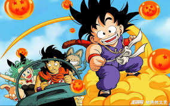
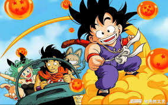
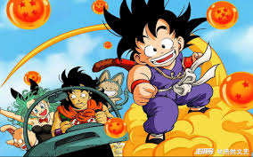

These anime series have stood the test of time and are widely regarded as must-watch classics for any anime fan. One of the most iconic among them is Dragon Ball, a story that follows the adventures of Goku as he grows from a child to a powerful martial artist.
Neon Genesis Evangelion – A deep and symbolic mecha series with psychological elements.
One Piece – A pirate adventure that spans generations.
Naruto – A tale of ninja life, bonds, and perseverance.
Dragon Ball – The legendary series that introduced the world to Super Saiyans.

Shonen
Anime targeted at younger audiences, often with themes of friendship, growth, and battles.
Mecha
Anime featuring giant robots, often with philosophical or futuristic settings.
 
